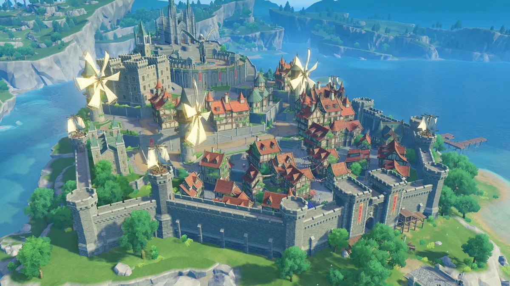
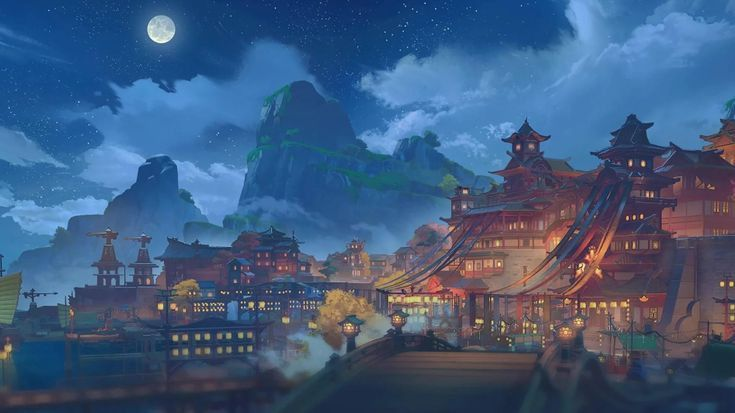
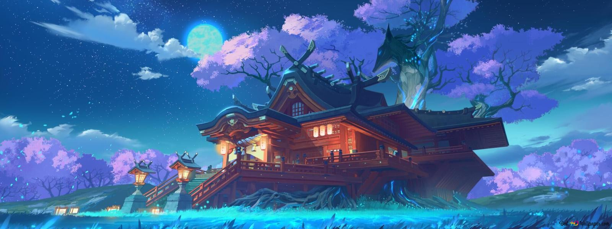
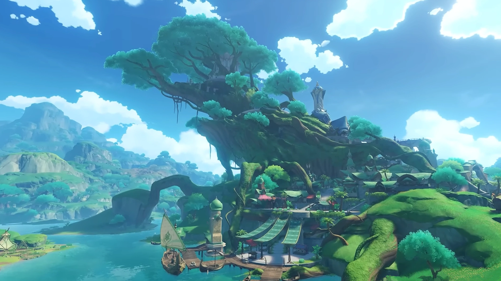
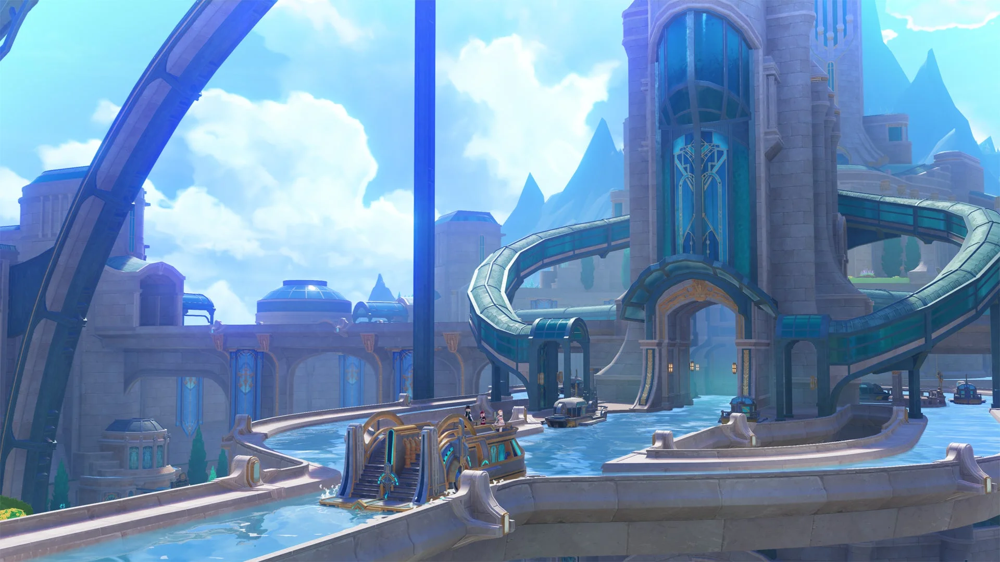
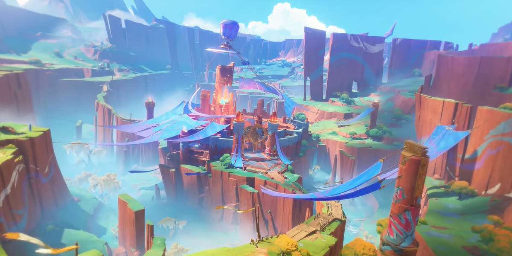
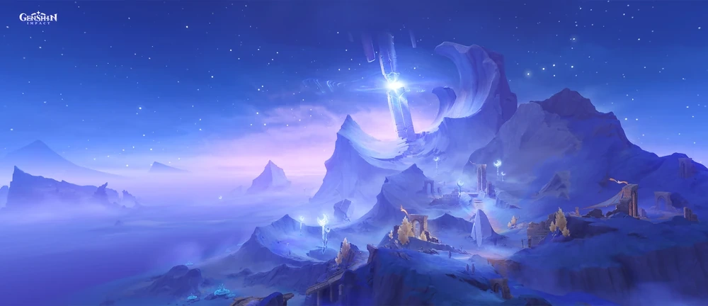
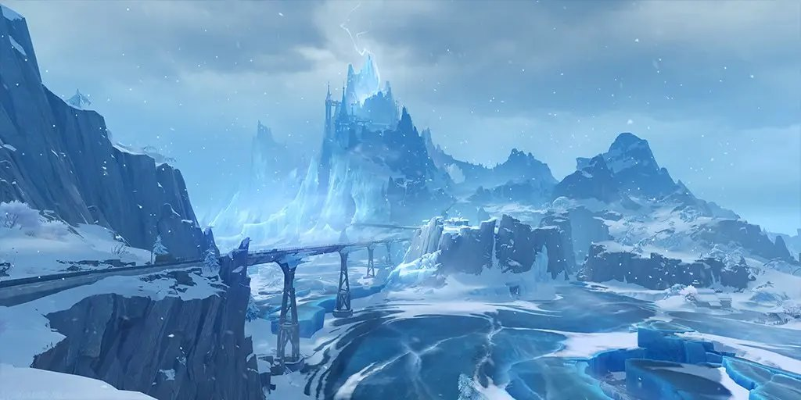

Тейват — фантастический мир, где в гармонии существуют семь элементов. В далёком прошлом могущественные Архонты научили людей управлять стихиями. С помощью этих навыков люди смогли превратить безжизненную пустыню в свой дом. 500 лет назад крах древней цивилизации перевернул весь мир с ног на голову... И хоть это было давно, мир до сих пор не до конца оправился от катастрофы.

Мондштадт — город свободы, расположенный в северо-восточной части Тейвата. Это одно из семи королевств Тейвата.
В городе ежегодно проводится фестиваль под названием Луди Гарпастум — праздник песен, вина и полёта, длящийся 15 дней.

Ли Юэ — богатый портовый город, расположенный в восточной части континента Тейват.
Ли Юэ поклоняется Гео Архонту Мораксу, или же Властелину Камня, как его называют сами жители Ли Юэ.

Инадзума — закрытый архипелаг на востоке от Тейвата. Это единственная страна в Тейвате, окружённая водой. Всего в Инадзуме шесть островов.
Инадзума поклоняется Электро Архонту Райдэн Эи, или же Баал — когда-то державшей всю Инадзуму в страхе из-за охоты на глаза бога.

Сумеру — город учёных, расположенный в западной центральной части континента Тейват. Удивительный край, где есть и пышные тропические леса, и бесплодные пески, где растут и покоятся бесчисленные плоды мудрости.
Сумеру поклоняется Дендро Архонту Нахиде — самой мудрой из семи Архонтов.

Фонтейн — невероятно красивый регион, вдохновлённый французской культурой и сказочными водными пейзажами. Расположен к западу от Порта Илун в Ли Юэ и к северо-востоку от Холмов Барсом в Сумеру.
В этом королевстве всё решается судами.

Натлан — объединённое клятвой государство, расположенное в западной части континента Тейват. По всей территории королевства бродит дух войны и чудесные существа Заврианы.
Натлан поклоняется Архонту войны Мавуике, готовой силой отстоять свой регион.

Нод-Край — автономная область на далёком севере Тейвата, куда не дотягивается власть Семи Архонтов. Вместо Архонтов здесь почитают Три Луны.
В регионе живут Дети Морозной Луны, Светоносцы, Кураторий тайн и мастерская крумкаке «Дзынь-Клац».

Снежная — самая северная и холодная страна Тейвата, родина Фатуи. Врата в неё открылись в обновлении 7.0 «Безжалостный мороз», а сам регион вдохновлён Россией и славянской культурой.
Архонт этого региона — Крио Архонт Царица, создавшая организацию «Фатуи» для охоты за сердцами богов.